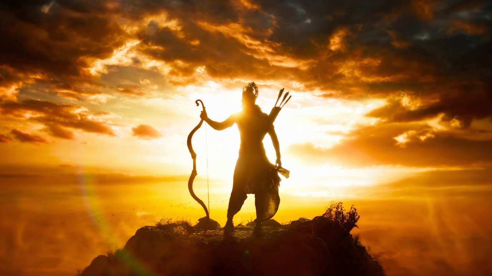
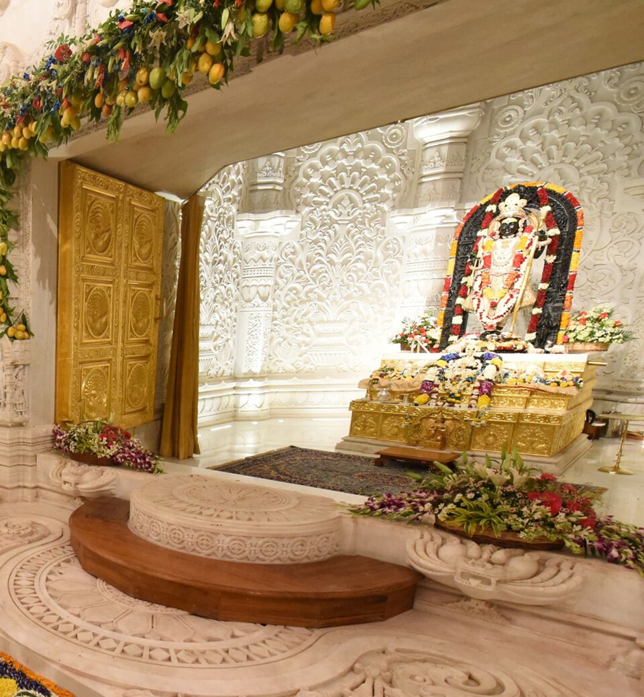

● RAMAYANA · PARDE SE AYODHYA TAK
Film ka sooraj VFX tha.
Yeh wala asli hai.

FILM · RAMAYANA (2026) · VFX
VS

AYODHYA · RAM NAVAMI · ASLI DHOOP
film still © Prime Focus Studios · DNEG (TMDB) · photo: PIB, GODL-India
Film mein Ram ke peeche sooraj computer ne banaya.